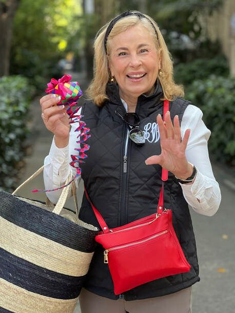

Level 01 · Start here
Beginning I
Novel cover: Beginning I
Basic oral fluency in the present tense, built from comprehensible Spanish rather than grammar exercises, and a lot of fun while you get there.
Course description →No textbooks, no grammar drills, no quizzes. You acquire Spanish the way you acquired your first language: through stories, reading and a great deal of laughing. Twenty-five years of teaching say it works.

Basic oral fluency in the present tense, built from comprehensible Spanish rather than grammar exercises, and a lot of fun while you get there.
Course description →Longer, more complex sentences and real comprehension of spoken Spanish, the point where you stop translating in your head.
Course description →The present indicative reviewed, then the past tense, all through stories and small-group talking. Prerequisite: Beginning I & II.
Course description →Guided conversation entirely in Spanish across the past, present, future and subjunctive. First half of a two-part course that continues directly into Advanced II.
Course description →The second half of Advanced I, back to back for consistency. Requires teacher approval to continue.
Course description →Instructor & owner, Learn Spanish Fast hoy. Non-native bilingual, learned Spanish in Spain, teaches on California's Central Coast, and has been teaching Spanish through stories for 25 years.
Because I speak Spanish I have double the friends, double the travel and double the fun, and I can express myself in two languages, with all their nuances. You can too.
I'm a right-brained learner, so learning Spanish the old-fashioned grammar way was a real stretch for me. I empathise with my students as they acquire the language, and they tell me that makes the difference. In my classes I get to teach culture, art, history, music and economics, all of it in Spanish.
Spanish is the second most spoken language in the world: 35 million speakers across 22 countries, and plenty of them right where you live. Everyone can learn a second language. It's good for the brain, it wards off senility, and it is genuinely fun.
After 25 years of teaching the communicative way, I pitched it overboard. I use TPRS® exclusively now, because the results are not comparable.
Profe Linda
TPRS® is a brain-friendly method built on highly interactive stories, developed by my mentor Blaine Ray. Every minute of class is comprehensible: you understand what you hear, so your brain acquires it instead of memorising it.
It is not your high school or college Spanish class. Students end up speaking without translating in their heads first, and no textbook is required.
TPRS® works much better than anything out there.
Dr. Stephen Krashen, language acquisition researcher
Class is built around highly interactive stories you help invent, so the language arrives attached to meaning.
You always understand what you're hearing. Nothing is thrown at you before you're ready for it.
A short Spanish novel per level teaches the highest-frequency vocabulary in context, not in lists.
No quizzes and no GPA pressure, motivation comes from actually being able to say things.
You have helped me so much in my Spanish journey. I'm very excited to live in Quito this year to continue my Spanish, and hope to serve in the Peace Corps in Latin America afterwards. None of it would be possible without your support. Estoy agradecido.
This course far exceeded my expectations. I'd had boring grammar-textbook Spanish classes before and didn't know one could have so much fun acquiring Spanish. You can't study a language like you study biology, you acquire it through reading and stories.
I was concerned about taking the class over Zoom, thinking it couldn't possibly be as good as in person. I was wrong. As a former teacher myself, I know how many hours went into making it this outstanding and this comprehensible.
Classes are virtual, so you can learn Spanish from anywhere: one weekly session plus a little reading between classes.
Tell me a little about where you are with Spanish and I'll point you to the right level, or you can take the placement quiz if you'd rather find out yourself.